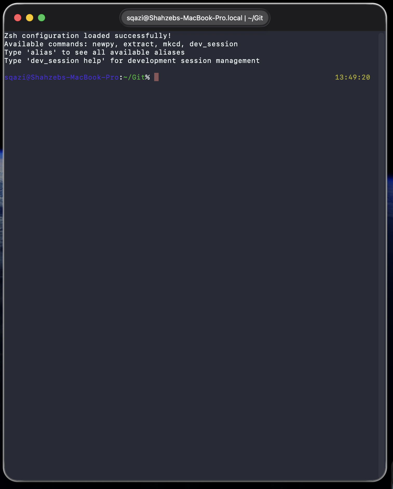
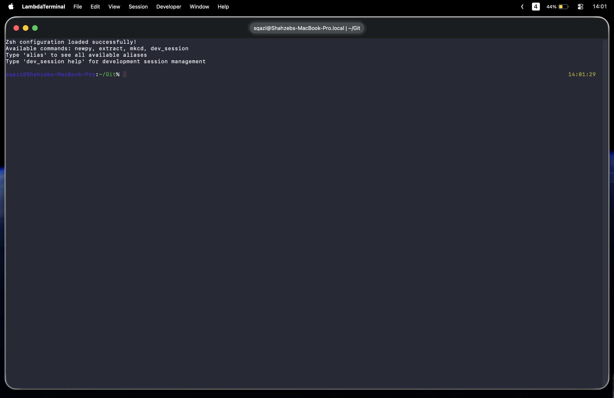
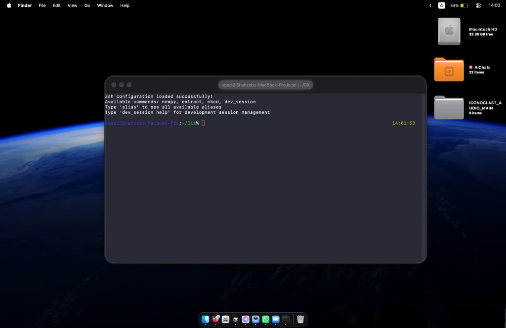
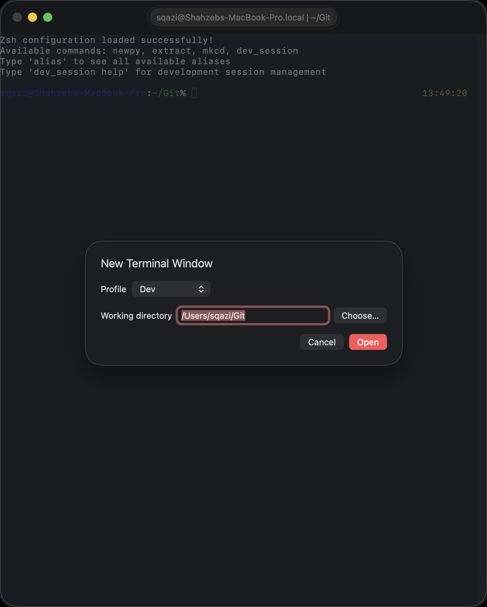
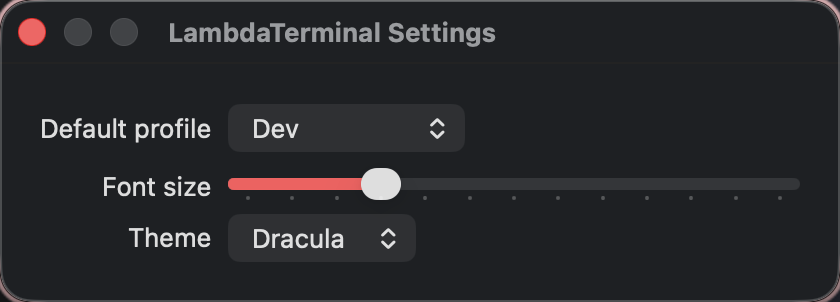

Four profiles
default, dev, lightweight, and ai — persisted under ~/.config/lambda-terminal/.
Profiles. Predictable XDG environments. Session semantics that match how you already work.

Not another config format — a small macOS app that launches shells with the conventions terminal power-users already carry.
default, dev, lightweight, and ai — persisted under ~/.config/lambda-terminal/.
⌘N picks profile + cwd. ⇧⌘O opens a project directory. Tabs inherit the active profile.
Developer → XDG Home Audit writes a Markdown report to ~/.local/state/lambda-terminal/xdg-report.md.
Apple-clean layout. Classic Mac personality. Real local sessions — not mockups.




Swift Package Manager. Unsigned debug builds are expected for v0.1.
git clone https://github.com/shahzebqazi/lambda-terminal.git
cd lambda-terminal
swift build
swift run LambdaTerminal
swift test
swift run xdg audit --stdoutArchitecture, profiles, and roadmap live in the repo.